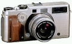

器材库 > 旁轴胶片相机 > TX-1

规格总览
产品类型
可换镜头旁轴胶片相机
发布日期
未知
使用胶卷/胶片
35mm胶片
停产
是
取景规格
取景器
亮框旁轴取景器
取景范围
85%
取景放大倍率
使用30mm/45mm镜头为0.45倍，使用90mm镜头为0.66倍
屈光度调节范围
-4D ~ +2D
曝光控制
测光模式
中央重点测光
测光范围
4EV~19EV
ISO感光度
25-3200
曝光补偿
±2EV以1/2EV级调整
自动曝光锁
有
快门
快门速度
8 - 1/1000秒，B门最长时间为270秒
闪光同步速度
1/125
快门线插孔
有
电源
电池
2枚CR2锂电池
外观
材质
金属钛和铝合金机身，外部部分包橡胶
尺寸
166 x 82 x 51mm
重量
720g
其它规格
备注
24 x 65mm 和 24 x 36mm双画幅，可中途转换
maxspeed2013-09-01 06:184.58 分
操作性 5.00功能性 5.00美观性 5.00趣味性 4.50耐用性 4.00性价比 4.00
大宋江山2011-03-01 00:384.58 分
操作性 4.50功能性 4.50美观性 5.00趣味性 4.50耐用性 4.50性价比 4.50
大宋江山2011-03-01 00:37
林曳之2010-11-25 11:424.92 分
操作性 5.00功能性 5.00美观性 5.00趣味性 5.00耐用性 4.50性价比 5.00
HWJ2006-01-23 10:454.58 分
操作性 4.50功能性 5.00美观性 4.00趣味性 4.50耐用性 4.50性价比 5.00
国仁2006-01-22 21:534.5 分
操作性 5.00功能性 5.00美观性 4.00趣味性 4.50耐用性 4.00性价比 4.50
kkg2005-04-17 11:374.67 分
操作性 4.00功能性 4.00美观性 5.00趣味性 5.00耐用性 5.00性价比 5.00
菲林有理2004-08-09 20:164.92 分
操作性 5.00功能性 5.00美观性 5.00趣味性 5.00耐用性 5.00性价比 4.50
产品图 / 样片
tx1
评测 / 相关文章
该产品暂无存档的评测文章